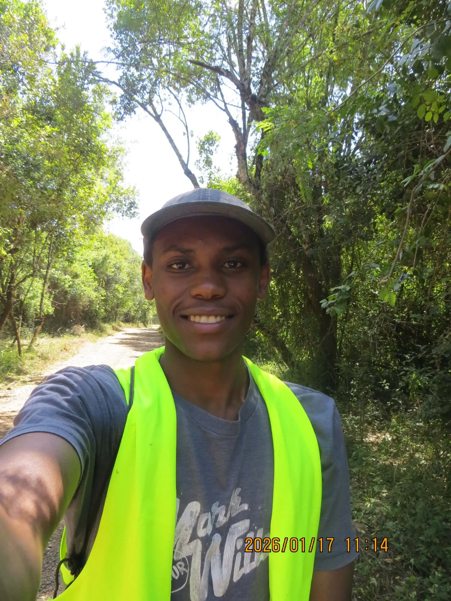
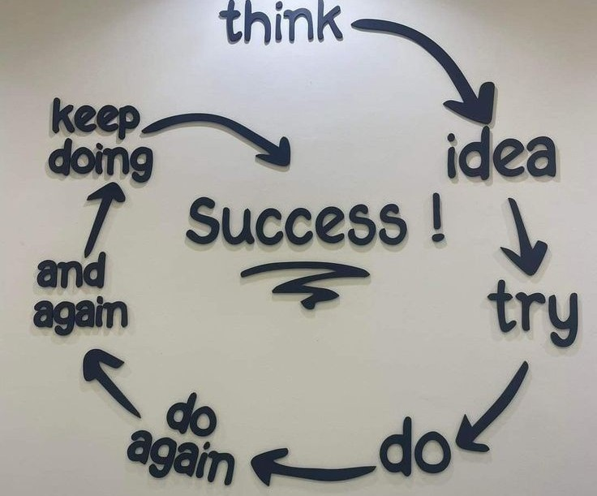

Finding the gap between how a system should behave — and how it actually does.
I'm Brian Karaba Wachira, an offensive security practitioner working the full arc of an engagement: recon, exploitation, privilege escalation, and reporting findings a non-technical stakeholder can act on.

Offensive security, from recon to the fix.
I'm an offensive security practitioner focused on finding the gap between how a system is supposed to work and how it actually behaves under pressure — network intrusion, web application exploitation, and post-exploitation tradecraft.
I'm comfortable working the full arc of an engagement: recon, exploitation, privilege escalation, and writing findings a non-technical stakeholder can actually act on. Based in Kenya, currently reading Computer Science at Dedan Kimathi University of Technology.
Read the manifesto that shaped how I think about this work
Another one got caught today, it's all over the papers. "Teenager
arrested in computer crime scandal", "Hacker arrested after bank
tampering"...
Damn Kids. They're all alike.
But did you, in your three-piece psychology and 1950's technobrain ever
take a look behind the eyes of a hacker? Did you ever wonder what made
him tick, what forces shaped him, what may have molded him?
I am a hacker, enter my world...
Mine is a world that begins with school. I've listened to the teacher
explain for the fifteenth time how to reduce a fraction. I understand
it. "No, Mrs. Smith, I didn't show my work. I did it in my head..."
Damn kid. Probably copied it. They're all alike.
I made a discovery today. I found a computer. Wait a second, this is
cool. It does what I want it to do. If it makes a mistake, it's because
I screwed up. Not because it doesn't like me...
or feels threatened by me...
or thinks I'm a smart ass...
or doesn't like teaching and shouldn't be here...
Damn kid. All he does is play games. They're all alike.
And then it happened... A door opened to a world... Rushing through the
phone line like heroin through an addict's veins, an electronic pulse is
sent out, a refuge from the day to day incompetencies is sought... A
board is found.
"This is it... This is where I belong..."
I know everyone here... Even if I've never met them, never talked to
them, may never hear from them again... I know you all...
Damn kid. Tying up the phone line again. They're all alike...
You bet your ass we're all alike... We've been spoon fed baby food at
school when we hungered for steak... The bits of meat that you did let
slip through were pre-chewed and tasteless. We've been dominated by
sadists, or ignored by the apathetic. The few that had something to
teach found us willing pupils, but those few are like drops of water in
the desert.
This is our world now... The world of the electron and the switch, the
beauty of the baud. We make use of a service already existing without
paying for what could be dirt cheap if it wasn't run by profiteering
gluttons, and you call us criminals. We explore... And you call us
criminals. We exist without skin color, without nationality, without
religious bias... And you call us criminals. You build atomic bombs,
you wage wars, you murder, you cheat, and lie to us and try to make us
believe it's for our own good, yet we're the criminals.
Yes, I am a criminal. My crime is that of curiosity. My crime is that
of judging people by what they say and think, not what they look like.
My crime is that of outsmarting you, something that you will never
forgive me for.
I am a hacker, and this is my manifesto. You may stop this individual,
but you can't stop us all...
After all, We're all alike.
— The Mentor, "The Conscience of a Hacker," 1986
Rhetoric Questin: Do you think the guy will make it to the other side?

What I work with
Tools and practices I reach for across recon, exploitation, and reporting.
Recon & Scanning
Web Exploitation
Exploitation & C2
Scripting
Interests
Work & competitions
Hands-on offensive security work, from CTFs to real engagements.
Africa Internet Summit CTF — Competitor
Position 4 of 259 competitors, scoring 11,700 points.
View scoreboard →Ongoza Cyber Hub — Offensive Security
Conducting offensive security operations including passive and active reconnaissance, network penetration testing, web application testing, and exploitation.
NYEKUSA — Web Pentesting
Built the club's website and found a gap: an authentication flow that could be bypassed. Rather than ship a shaky login, I removed the feature and kept the site simple and safe.
Education
- BSc. Computer Science
Dedan Kimathi University of Technology - Ethical Hacking
Cybershujaa - Strategic Management
Saylor Academy - Ethical Hacking
Cisco Networking Academy - KCSE — B+
Kanjuri Boys High School - KCPE — 365 Marks
Ngunguru Primary School
Labs, projects & notes
Field notes from labs, CTFs, and real engagements.
Active Directory Lab Notes
Building a disposable AD range to practice enumeration and lateral movement without touching anything real.
Read write-up →Port Scanning — Workflow Notes
Knowing what's actually listening on a target is the difference between guessing and testing.
Read write-up →Information Gathering — Recon Workflow
Recon is where every engagement actually starts — this is the workflow I use to map an attack surface before touching an exploit.
Read write-up →Social Engineering Attacks
Evaluating how the weakest link in any system — people — can be exploited, and what that means for defenders.
Read write-up →Cybersecurity Mindset
Knowledge is power — and in this field, that power comes with a choice about how you use it.
Read write-up →Cybersecurity Introduction
What most people picture when they hear 'cybersecurity' — and what it actually means to work in it.
Read write-up →My Cybersecurity Qualities
The traits I try to bring to every engagement, lab, and CTF.
Read write-up →Information Gathering — OSINT Lab
A hands-on OSINT pass using social platforms and passive recon tooling.
Read write-up →Port Scanning — Nmap Lab
A practical Nmap pass to map open ports and services on a lab target.
Read write-up →Bug Bounty
Practicing offensive skills the right way — inside legal, structured bug bounty programs.
Read write-up →Maximum Devices Connected to a WiFi Router
A hostel WiFi bottleneck turned into a small, hands-on networking experiment.
Read write-up →Pentesting a Website
Taking ownership of a real club website's security — and turning it into a hands-on pentesting project.
Read write-up →Other things I Do.
Security isn't the only thing I do — side projects, leadership, and everything else.
Developer
nyekusa.github.io
Built for our campus club, to give it a platform to express who it is — with a bookmarking feature for event photos and members.
Visit site →findawesomegames.vercel.app
A repository of games for team-building — for organisations, outdoor sessions, and couples. Born from a campus games session where nobody had the right game on hand.
Visit site →awesomeai-chat.vercel.app
An intentionally hallucinating AI chatbot — built purely for laughs.
Visit site →Leadership
Vice Chair, NYEKUSA
After serving as Secretary General in my first year, I was elected Vice Chair — one of the most influential parts of my campus life, where I learned how leadership can both drain and empower you.
Mentor, Young Generation
I know you can't believe it. I also wonder what people think when coming to me for advice. The world is really cooked. But believe me — from where I come from, I'm one of the best when it comes to discipline and of course one of the bright ones. Many come to me for career choice advice and even others for friendly advice.
Learner & Leader, Taifa Teule Leadership Experience
Completed cohort 24 of TLX (Sep–Dec 2025), covering temperaments, risk management, and critical thinking — including a hands-on project renovating a primary school's classrooms. TLX reinforced a simple idea: to lead well, first learn to follow.